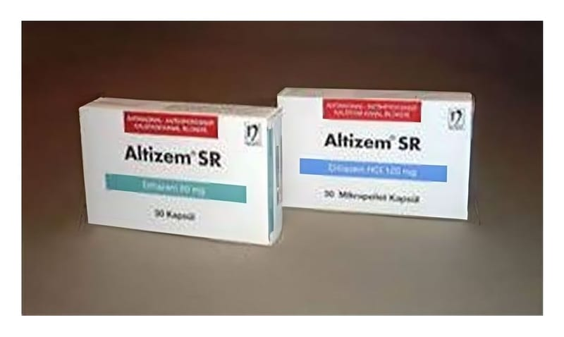

Altizem-SR 60 mg Kapsül, 30 Adet

Ne için kullanılır
KT · Bölüm 1ALTİZEM SR, kalsiyum kanal blokörleri adı verilen bir ilaç grubuna dahildir.
Kan damarlarını genişleterek kan basıncınızı düşürmeye yardımcı olur. Ayrıca, kalbin vücuda kan pompalamasını kolaylaştırarak anjinadan (kalbi besleyen damarların daralması/tıkanması ile ortaya çıkan göğüs ağrısı) kaynaklanan göğüs ağrısının önlenmesine yardımcı olur.
ALTİZEM SR, Yeşil opak/Renksiz TR No=3 sert jelatin kapsüller şeklindedir ve 30 mikropellet kapsüllük blister ambalajlarda kullanıma sunulmaktadır.
ALTİZEM SR kapsül: • Anjina pektorisin (sıklıkla göğüs ağrısı ile kendini gösteren bir kalp ve damar hastalığı) tedavisi ve önlenmesinde • Hafif ve orta derecede yüksek kan basıncının tedavisinde kullanılır.